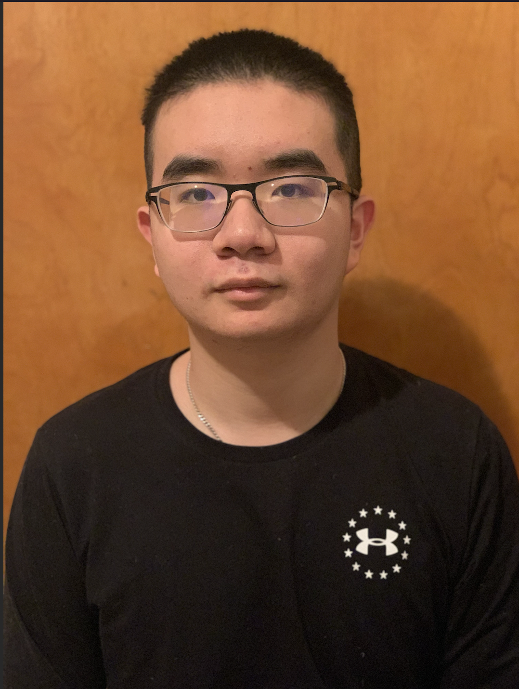

About the Webmasters
Kenny Luong

Hey, I'm Kenny. I'm currently a freshman studying Computer Science. I've been delving in HTML, JavaScript, and CSS for 3 years now, and I believe it's now time to use those skills to push forward a cause I believe in. In my free time, I play video games and practice playing music.
I'm a computer science major who's debating on a minor in Sociology and Anthropology. I'm still questioning what I want to do with my future as I've always shared an equal amount of passion for computer science and music. When I graduate, I either want to pursue a career in programming and game development, or in music. I'm still unsure of what I want in the future, but either way, I'll make it up as I go along.
Throughout my long history of trying to keep up to date with current issues in the world, the main one that’s always stood out to me is global warming/climate change. I hope that EarthShield will play a role in spreading awareness about this issue, and to hopefully encourage others to play a part in stopping this plague on our planet.
For more information, feel free to check out my blog!
Wilson Lu
Hello there, I am Wilson. I am also a freshman majoring in Computer Science. I tinker with code and build website for a few years. I am putting my skills to the test with a cause to help. I am having fun learning more about HTML and coding classes.
I spend most of my free time coding bots and learning more languages on the side. If you meet up with me, you will either see me on my phone or on my computer doing some new creative stuff.
For career goals, I hope to one day create my own startup. On what ground the startup will be about? I have no ideas yet, I am involved around Discord, engaging in many different companies all related to startups and wishing I can make one myself.
For more information, take a look here!